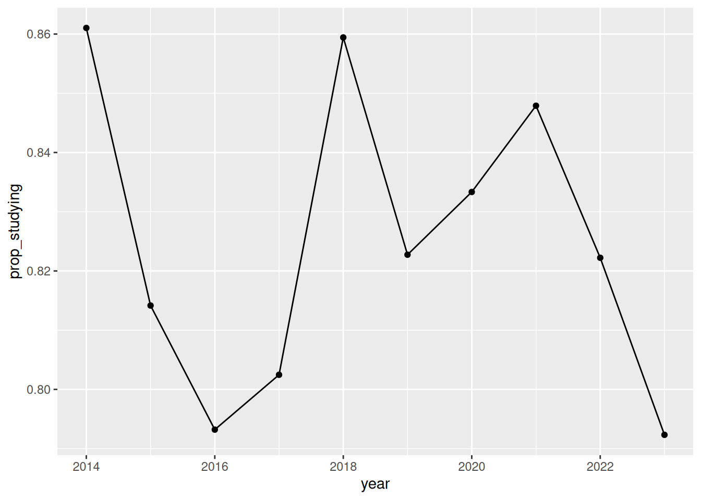

4 Looking inside a function
Writing a function is like putting your code into a box.
Or, for a physical analogy, it is like getting a bunch of complex wiring and circuitry, and building a box around it, and only adding the dials and buttons you need it to do the task.
Imagine a TV remote: you use a TV remote and only touch the relevant buttons to change the channel, increase the volume, and use the arrow buttons to browse the right streaming service, peruse settings, etc.
You don’t want to hold the bare circuit board, battery, and wires. You want the nice sleek remote someone designed. You want to just worry about the interface.
I think this is the main benefit of a function - it is an expression of a sequence of steps into something easier to reason with. A function simplifies the complex - sometimes this is called “abstracting away complexity”.
Making your function be a thing that removes complexity is good. But, you also need to be able to look inside your function to understand how it works - especially when something breaks!
If we teach you how to build a nice box, but don’t teach you how to open it, we aren’t really teaching you how to write functions.
This chapter is about how to look inside a function, so you can understand how it works, and how to unpack some of the errors or common failure points.
Overview
Duration 60 minutes
Questions
- How do I look inside a function I wrote?
- How do I look inside a function I did not write?
What you need this session
- A session of RStudio open, in the same folder as last time
- The following R packages:
education_path <- function(year) {
here(glue("data/tidy/education_{year}.csv"))
}
year_from_path <- function(path) {
basename(path) |>
parse_number()
}
read_education <- function(year) {
files <- education_path(year)
education_raw <- read_csv(files, id = "path")
education_raw |>
mutate(year = year_from_path(path)) |>
select(-path)
}
education <- read_education(2014:2023)
ed_2023 <- filter(education, year == 2023)4.1 Is the proportion of people studying changing over time?
We are back at the education data:
Rows: 720 Columns: 6
── Column specification ────────────────────────────────────────────────────────
Delimiter: ","
chr (2): state_territory, age_group
dbl (3): n_studying, population, prop_studying
ℹ Use `spec()` to retrieve the full column specification for this data.
ℹ Specify the column types or set `show_col_types = FALSE` to quiet this message.# A tibble: 720 × 6
state_territory age_group n_studying population prop_studying year
<chr> <chr> <dbl> <dbl> <dbl> <dbl>
1 ACT 15_19 19.3 23.8 0.811 2014
2 ACT 20_24 18.1 31.6 0.573 2014
3 ACT 25_29 9.4 34.9 0.269 2014
4 ACT 30_34 4.5 32.8 0.137 2014
5 ACT 35_39 4.5 28.7 0.157 2014
6 ACT 40_44 2.6 28.4 0.0915 2014
7 ACT 45_49 1 24.2 0.0413 2014
8 ACT 50_54 3 24 0.125 2014
9 ACT 55_74 2.1 67.2 0.0312 2014
10 NSW 15_19 388. 462. 0.841 2014
# ℹ 710 more rowsWe are going to explore the question:
Is the proportion of people studying, changing over time?
We can get at a general sense of this by viewing the data. Looking at the proportion of people studying in each year, for all age groups and states:
But let’s explore just looking at 15-19 year olds in Tasmania:
# A tibble: 10 × 6
state_territory age_group n_studying population prop_studying year
<chr> <chr> <dbl> <dbl> <dbl> <dbl>
1 Tas. 15_19 28.5 33.1 0.861 2014
2 Tas. 15_19 27.6 33.9 0.814 2015
3 Tas. 15_19 25.7 32.4 0.793 2016
4 Tas. 15_19 26 32.4 0.802 2017
5 Tas. 15_19 26.9 31.3 0.859 2018
6 Tas. 15_19 24.6 29.9 0.823 2019
7 Tas. 15_19 26 31.2 0.833 2020
8 Tas. 15_19 26.2 30.9 0.848 2021
9 Tas. 15_19 25.9 31.5 0.822 2022
10 Tas. 15_19 24.8 31.3 0.792 2023
Let’s write a function to explore fitting a linear model. In essence, a linear model here will try and fit a straight line of best fit, through all of the data.
We would say:
Predict proportion of studying by Year
Let’s do it:
Call:
lm(formula = prop_studying ~ year, data = data)
Coefficients:
(Intercept) year
3.668775 -0.001409 OK! Interesting! Slightly negative effect.
Let’s try another state: Queensland.
# A tibble: 80 × 6
state_territory age_group n_studying population prop_studying year
<chr> <chr> <dbl> <dbl> <dbl> <dbl>
1 ACT 15_19 19.3 23.8 0.811 2014
2 NSW 15_19 388. 462. 0.841 2014
3 NT 15_19 11.2 15.4 0.727 2014
4 Qld 15_19 234. 306. 0.767 2014
5 SA 15_19 83.3 100. 0.830 2014
6 Tas. 15_19 28.5 33.1 0.861 2014
7 Vic. 15_19 310. 357. 0.867 2014
8 WA 15_19 119. 159. 0.745 2014
9 ACT 15_19 20.5 22.7 0.903 2015
10 NSW 15_19 389. 460. 0.845 2015
# ℹ 70 more rowsError in `lm.fit()`:
! 0 (non-NA) casesWomp. Let’s read this error message:
Error in lm.fit(x, y, offset = offset, singular.ok = singular.ok, ...) :
0 (non-NA) cases
Called from: lm.fit(x, y, offset = offset, singular.ok = singular.ok, ...)OK, so we use lm(), and I guess lm.fit() is used somewhere.
What do you think the error message is telling us?
Error in lm.fit(x, y, offset = offset, singular.ok = singular.ok, ...) :
0 (non-NA) cases
Called from: lm.fit(x, y, offset = offset, singular.ok = singular.ok, ...)How about:
Error in `as.data.frame.default()`:
! cannot coerce class '"formula"' to a data.frameOr
How about:
Warning in fortify(data, ...): Arguments in `...` must be used.
✖ Problematic arguments:
• x = Ozone
• y = Solar.R
ℹ Did you misspell an argument name?Error in `geom_line()`:
! Problem while setting up geom.
ℹ Error occurred in the 1st layer.
Caused by error in `compute_geom_1()`:
! `geom_line()` requires the following missing aesthetics: x and y.The key seems to be:
0 (non-NA) cases
My guess would be that this is related to there not being any cases? Let’s test this idea:
# A tibble: 0 × 6
# ℹ 6 variables: state_territory <chr>, age_group <chr>, n_studying <dbl>,
# population <dbl>, prop_studying <dbl>, year <dbl>Ah! I see.
But what if we want to see inside the function? Is there a way to do that? Like, to look inside of fit_study_trend(), and see what it sees?
4.2 browser(): How to browse inside a function
Error messages will only take you so far. Reading an error message can tell you where an error happens, but it doesn’t show you what the values are inside the function.
If we wrote this out as a script - you can do this interactively.
Error in `lm.fit()`:
! 0 (non-NA) casesError:
! object 'fit_young_qld' not found# A tibble: 0 × 6
# ℹ 6 variables: state_territory <chr>, age_group <chr>, n_studying <dbl>,
# population <dbl>, prop_studying <dbl>, year <dbl>This used to be my process for exploring functions, when I wanted to understand how they worked, or if they had errors:
- Pull the function body out
- Set the arguments of your function
- Run the script line by line
The process does work. But it also has some shortfalls:
- Copying the body of the function takes time. This is a one-line function. What if your function is really big?
- Copying and pasting opens you to copy/paste errors
- What if you want to explore another function inside that one?
There is a more elegant solution: using browser().
Imagine we had our function like this - multiple steps, filtering out, then fitting a model.
Error in `lm.fit()`:
! 0 (non-NA) casesIn order to see inside the function, place browser() inside the code:
Then, the next time you call the function:
R stops, and gives you a prompt - something like the following:
Called from: fit_study_filtered(education, "Queensland", "15_19")
Browse[1]> The special thing to note is:
Browse[1]>This tells us that we are inside the function
This is the “debugging mode” of R.
Look in the environment pane:

The environment pane switches from your workspace to the function’s environment, so it lists data, and nothing else, rather than everything you have lying around.
This is something worth noting about functions:
Functions have their own environment
Notice you can see the function arguments, and the intermediate values.
There are more details to functions, we have only scratched the surface. I think this rule kind of gets you most of the way there:
Functions can override assignment within the function body.
If you define x inside a function, it uses that variable. Otherwise, it searches for it.
[1] 0.5[1] 1[1] 1.5[1] 10It is a bit spooky! But it turns out this is really useful in statistical computing.
This idea is called lexical scoping. A good place to learn more about this is in the functions chapter of advanced R.
You can explore functions by seeing what their output is in the console.
You can also run the code inside the function. You can view the browser() help with help. This reveals a little map of commands:
Browse[1]> help
n next
s step into
f finish
c or cont continue
Q quit
where show stack
help show help
<expr> evaluate expression
Browse[1]>There are five commands that I think are worthwhile knowing:
nruns the next lineccontinues to the endQquits and gets you outffinishes the function you are inssteps into a function
Let’s type “n”, to run each line of code.
Setup code
library(countdown)
library(glue)
library(here)
library(scales)
library(tidyverse)
education_path <- function(year) {
here(glue("data/tidy/education_{year}.csv"))
}
year_from_path <- function(path) {
basename(path) |>
parse_number()
}
read_education <- function(year) {
files <- education_path(year)
education_raw <- read_csv(files, id = "path")
education_raw |>
mutate(year = year_from_path(path)) |>
select(-path)
}
education <- read_education(2014:2023)
ed_2023 <- filter(education, year == 2023)
fit_study_trend <- function(data) {
lm(prop_studying ~ year, data = data)
}
pct <- function(x) {
round(x * 100, 1)
}
trend_per_decade <- function(model) {
model_coef <- coef(model)
year_term <- model_coef[["year"]] * 10
year_as_percent <- pct(year_term)
year_as_percent
}Let’s get you used to placing a little browser() in your code: here’s a slightly modified version of the above code.
- Copy the code locally
- Check to see if you can fit a model
- Place
browser()in there, practice moving forward withn, or using the RStudio tools - Practice looking for help with
help - Try using
son one of the lines. What happens? - Practice using
Q
Answer
OK, now that you’ve had a bit of time to practice that, let’s go back into this, and explore another example error:
Setup code
library(countdown)
library(glue)
library(here)
library(scales)
library(tidyverse)
education_path <- function(year) {
here(glue("data/tidy/education_{year}.csv"))
}
year_from_path <- function(path) {
basename(path) |>
parse_number()
}
read_education <- function(year) {
files <- education_path(year)
education_raw <- read_csv(files, id = "path")
education_raw |>
mutate(year = year_from_path(path)) |>
select(-path)
}
education <- read_education(2014:2023)
ed_2023 <- filter(education, year == 2023)
fit_study_trend <- function(data) {
lm(prop_studying ~ year, data = data)
}
pct <- function(x) {
round(x * 100, 1)
}
trend_per_decade <- function(model) {
model_coef <- coef(model)
year_term <- model_coef[["year"]] * 10
year_as_percent <- pct(year_term)
year_as_percent
}Let’s say we have some new functions to get the percent, and trend details:
Call:
lm(formula = prop_studying ~ state_territory, data = young)
Coefficients:
(Intercept) state_territoryNSW state_territoryNT
0.869777 -0.020385 -0.158507
state_territoryQld state_territorySA state_territoryTas.
-0.097271 -0.032893 -0.044895
state_territoryVic. state_territoryWA
0.004219 -0.070663 Error in `model_coef[["year"]]`:
! subscript out of bounds- Put a
browser()at the top oftrend_per_decade()and run it again. - At the prompt, run
coef(model). What is in there? - What does
[["year"]]do?
Answer
When we use coef(model), this gives you the coefficient for every state, named (Intercept), state_territoryNSW, state_territoryNT and so on.
However, in this case, there is no year, because year was never in the lm formula!
When we do: [["year"]] we are asking for an element by the name “year”. It errors when there is no such name.
The error: “Subscript out of bounds” means
“you asked for something that is not in here”
The fix is to the model, not to trend_per_decade(). Again.
Up and down the ladder of abstraction
Similar to the process of writing functions at a higher level in “outside in, inside out”, we are now able to move at the higher coarser level of the functions we wrote, and then drop down into the more finer level details.
I think of this process of going up and down the levels of complexity as moving “up and down the ladder of abstraction”.
It’s like if we have our functions, we are looking at a map overview, but then when we use a function like browser(), it drops you into street-view.
Just like in “outside in, inside out”, it was useful to move between writing functions at a definition level, and then working at a script, it is useful to be able to dive into functions and understand them, then move back up.
I first heard about the phrase, “Up and down the ladder of abstraction” from Bret Victor, in his Up and Down the Ladder of Abstraction talk. It’s a really cool talk on the power of getting interactivity in debugging, and how that leads to other creative solutions.
Takehomes
browser()stops inside the function and gives you an ordinary R prompt- The environment pane switches to the function’s own environment
n,c,Q,fandsare the five controls- The debugger shows you values, you still do the working out
debug(): You can’t always browser()
Some of the downsides to using browser() are that you cannot always use it, because you might not be able to hand place a browser() in a function from another package.
I really like to use debugonce() for this. Or, if you are already at the debug prompt, s steps you into that function.
The pattern is:
Compared to browser():
Same prompt, same everything, and no edit to the function.
debug() is the same thing except it’s permanent, so the function stops every single time until you say undebug(). That gets old fast, which is why debugonce() is nearly always the one you want.
Now, practice the same thing you did before with browser, but:
- Run
debugonce()ontrend_per_decade():debugonce(trend_per_decade)and run it again. - Play around at the prompt
- Run some code
- finish by typing
f - Now practice using
debug(trend_per_decade), and make sure to useundebug()on it, too
Setup code
library(countdown)
library(glue)
library(here)
library(scales)
library(tidyverse)
education_path <- function(year) {
here(glue("data/tidy/education_{year}.csv"))
}
year_from_path <- function(path) {
basename(path) |>
parse_number()
}
read_education <- function(year) {
files <- education_path(year)
education_raw <- read_csv(files, id = "path")
education_raw |>
mutate(year = year_from_path(path)) |>
select(-path)
}
education <- read_education(2014:2023)
ed_2023 <- filter(education, year == 2023)
fit_study_trend <- function(data) {
lm(prop_studying ~ year, data = data)
}
pct <- function(x) {
round(x * 100, 1)
}
trend_per_decade <- function(model) {
model_coef <- coef(model)
year_term <- model_coef[["year"]] * 10
year_as_percent <- pct(year_term)
year_as_percent
}
Call:
lm(formula = prop_studying ~ state_territory, data = young)
Coefficients:
(Intercept) state_territoryNSW state_territoryNT
0.869777 -0.020385 -0.158507
state_territoryQld state_territorySA state_territoryTas.
-0.097271 -0.032893 -0.044895
state_territoryVic. state_territoryWA
0.004219 -0.070663 Error in `model_coef[["year"]]`:
! subscript out of boundsAnswer
Using RStudio interface for debugging
RStudio has all of this on the interface.
Click in the margin to the left of a line number and you get a red dot, which is a breakpoint. It does what browser() does, without editing the file.
Setup code
library(countdown)
library(glue)
library(here)
library(scales)
library(tidyverse)
education_path <- function(year) {
here(glue("data/tidy/education_{year}.csv"))
}
year_from_path <- function(path) {
basename(path) |>
parse_number()
}
read_education <- function(year) {
files <- education_path(year)
education_raw <- read_csv(files, id = "path")
education_raw |>
mutate(year = year_from_path(path)) |>
select(-path)
}
education <- read_education(2014:2023)
ed_2023 <- filter(education, year == 2023)read_education() lives in ch1/read_education.R. Pretend you did not write it and would rather not open it.
- Run it. Where does the message say the problem is?
- Use
debugonce(read_education)and run it again. - Press
ntwice, and look atfilesafter each one. - What would you tell the person who wrote it?
Answer
The message names a path that does not exist, which is genuinely useful, and it names it from somewhere inside readr.
Stepping through, files is built before anything is read, so you can see the wrong path exist as a value before it becomes an error.
What you would tell them: nothing checks the year before building a path out of it. read_education(2009) and read_education("banana") both fail the same way, deep inside a package, when either could have been caught in the first line.
Setup code
library(countdown)
library(glue)
library(here)
library(scales)
library(tidyverse)
education_path <- function(year) {
here(glue("data/tidy/education_{year}.csv"))
}
year_from_path <- function(path) {
basename(path) |>
parse_number()
}
read_education <- function(year) {
files <- education_path(year)
education_raw <- read_csv(files, id = "path")
education_raw |>
mutate(year = year_from_path(path)) |>
select(-path)
}
education <- read_education(2014:2023)
ed_2023 <- filter(education, year == 2023)
fit_study_trend <- function(data) {
lm(prop_studying ~ year, data = data)
}
pct <- function(x) {
round(x * 100, 1)
}
trend_per_decade <- function(model) {
model_coef <- coef(model)
year_term <- model_coef[["year"]] * 10
year_as_percent <- pct(year_term)
year_as_percent
}This one has no bug. You are practising the controls.
- At the prompt, type
s. Where are you now? - Type
x. What is it, and where did it come from? - Type
fto finish, thencto carry on. - Try it again with
Qinstead. What is different?
Answer
s steps into the next function rather than over it, so you land inside pct(), one level down. The prompt still says Browse[1]> but debug at #1 names a different line.
f finishes the function you are standing in and drops you back out. c runs to the end and gives you the answer. Q stops everything and gives you nothing.
The difference between f and c is subtle. Basically f will finish the current loop, or step, and you might then stay inside the function. Whereas c will immediately exit the browser and run the remaining code.
Setup code
library(countdown)
library(glue)
library(here)
library(scales)
library(tidyverse)
education_path <- function(year) {
here(glue("data/tidy/education_{year}.csv"))
}
year_from_path <- function(path) {
basename(path) |>
parse_number()
}
read_education <- function(year) {
files <- education_path(year)
education_raw <- read_csv(files, id = "path")
education_raw |>
mutate(year = year_from_path(path)) |>
select(-path)
}
education <- read_education(2014:2023)
ed_2023 <- filter(education, year == 2023)
fit_study_trend <- function(data) {
lm(prop_studying ~ year, data = data)
}
pct <- function(x) {
round(x * 100, 1)
}
trend_per_decade <- function(model) {
model_coef <- coef(model)
year_term <- model_coef[["year"]] * 10
year_as_percent <- pct(year_term)
year_as_percent
}Everything so far has stopped with an error. This one does not.
Zero. No change at all, over ten years, nationally. Nothing complains.
- Do you believe it? Say why or why not before you touch anything.
debugonce(trend_per_decade), run it again, and look atnobs(model). How many rows went in?- How many years are in this data?
- Work out what the zero actually is.
Answer
nobs(model) is 80, and there are ten years. So it fitted one straight line through all eight states at once.
Tasmania is falling, Queensland is rising, and pooling them gives zero because they cancel. The zero is not a measurement, it is an average of things that disagree.
This is the one to take away. There was no error and no warning, so nothing was ever going to tell you. nobs() took one command, and you only ran it because you did not believe the number.
Takehomes
browser()stops inside the function and gives you a normal R promptn,candQare most of what you need at that promptdebugonce()does it to a function you didn’t write, anddebug()does it until you stop it- A breakpoint in the margin is the same thing with the mouse
Summary
- Some messages give you nothing to act on. When reading harder will not help, go and look.
- The mistake is often upstream of the function that failed.
browser()puts you inside the function with a normal prompt and every value to hand.debugonce()for a function you did not write.debug()keeps going until you stop it.n,s,f,candQare the controls I think you should be familiar with- The debugger shows you values. But it’s still up to you to work out the issues.